It is often necessary to enhance multispectral radiance or reflectance data to create an image that is suitable for visual interpretation.
This demo illustrates some basic image composition and enhancement techniques for use with multispectral data. It uses imagery covering part of Boston, Massachusetts. Each spectral band is stored in one file in GeoTIFF format. This demo requires the Image Processing Toolbox.
Read the red, green, and blue bands from the GeoTIFF files. These bands cover the visible part of the spectrum. When they are mapped to the red, green, and blue planes, respectively, of an RGB image, the result is a truecolor composite.
[truecolor(:,:,1), R, bbox] = geotiffread('boston_red.tif'); truecolor(:,:,2) = geotiffread('boston_green.tif'); truecolor(:,:,3) = geotiffread('boston_blue.tif');
Display the truecolor composite image.
figure mapshow(truecolor,R); xlabel('Easting (meters)'); ylabel('Northing (meters)'); title({'Truecolor Composite ', 'Copyright Space Imaging LLC'});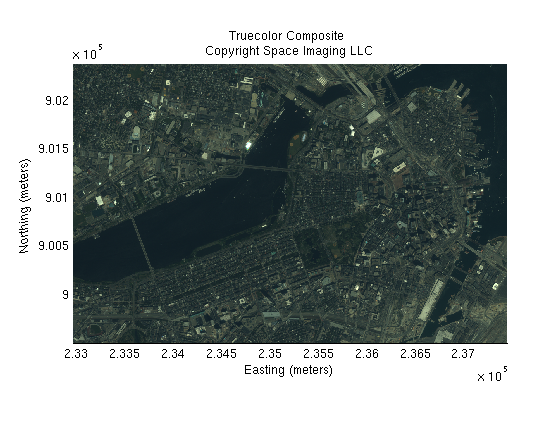
The truecolor image has a blue-green (cyan) tint and is dark. This can be corrected by several different types of spectral correction techniques. The first of two techniques enhance the bands using imadjust. Although this adjustment brightens the image, it also modifies the original RGB colors since each band is adjusted independently.
The points in the correction curves are used to map the values in the truecolor image to new values. Use stretchlim to obtain red, green, and blue correction values.
correction_curves = stretchlim(truecolor);
Plot the correction curves.
figure plot([0,1],[0,1],'k') hold on plot([0,correction_curves(:,1)',1],[0,0,1,1],'r') plot([0,correction_curves(:,2)',1],[0,0,1,1],'g') plot([0,correction_curves(:,3)',1],[0,0,1,1],'b') title('Band Stretch Curves'); axis tight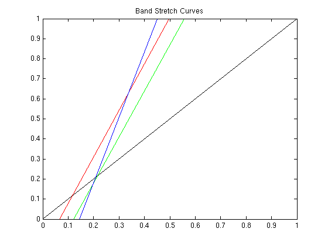
Adjust the image using these new correction curves.
band_stretched = imadjust(truecolor,correction_curves);
Display the band stretched image.
figure mapshow(band_stretched, R); xlabel('Easting (meters)'); ylabel('Northing (meters)'); title({'Truecolor Composite ', 'Band Stretched'});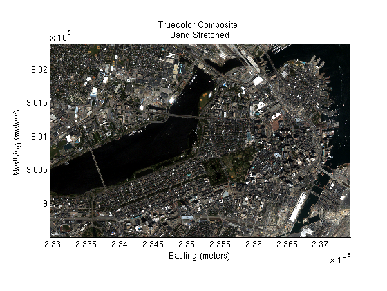
The truecolor image blue-green (cyan) tint can be corrected by performing a color correction using a piecewise-linear band stretch. Although this technique allows greater precision in modifying the correction curves, the task of creating the breakpoints is tedious. Use imview to view the image. Pick neutral pixels (gray tones), ( from buildings or roads), and create a table of color correction values. The selected gray tones are adjusted so that the transformed color is 'gray' (equal weight red, green, and blue values).
These color correction curves correct the cyan overture.
% The red band curves. red_in = [0, 35, 56, 111, 155, 191, 255]; red_out = [0, 46, 65, 109, 149, 184, 238]; % The green band curves. green_in = [0, 65, 100, 120, 185, 255]; green_out = [0, 60, 85, 100, 161, 237]; % No change for the blue band.
Plot the red, green, blue correction curves.
figure plot(red_in,red_out,'r') hold on plot(green_in,green_out,'g') plot([0,255],[0,255],'b') axis tight title('RGB Piecewise-linear Band Stretch Curves');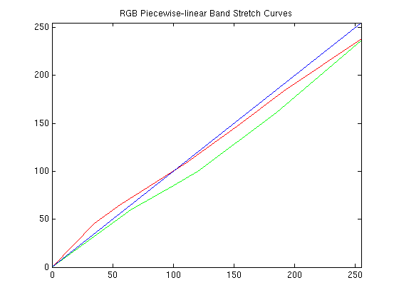
Apply the piecewise-linear curves to the truecolor image for color correction.
% Adjust the red band. piecewise_stretched(:,:,1) = mapexlincomb(truecolor(:,:,1),red_in, red_out); % Adjust the green band. piecewise_stretched(:,:,2) = mapexlincomb(truecolor(:,:,2),green_in, green_out); % No change for the blue band. piecewise_stretched(:,:,3) = truecolor(:,:,3);
Display the piecwise-linear stretched image.
figure mapshow(piecewise_stretched,R); xlabel('Easting (meters)'); ylabel('Northing (meters)'); title({'Truecolor Composite ', 'Piecewise-linear Stretched'});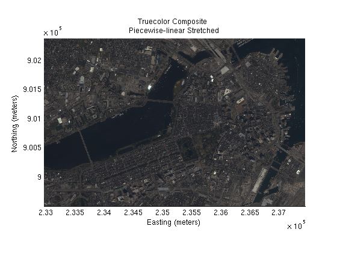
The color balanced (piecewise-linear stretched) image appears dark. The first of two techniques to brighten the image stretches the histogram of each band equally. This brightens the image, and by adjusting the bands equally, minimizes the overall color change.
Display histograms of the red, green, and blue bands.
figure;imhist(im2double(piecewise_stretched(:,:,1))); title('Histogram of the Red Band'); figure;imhist(im2double(piecewise_stretched(:,:,2))); title('Histogram of the Green Band'); figure;imhist(im2double(piecewise_stretched(:,:,3))); title('Histogram of the Blue Band');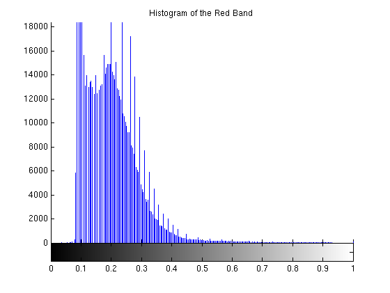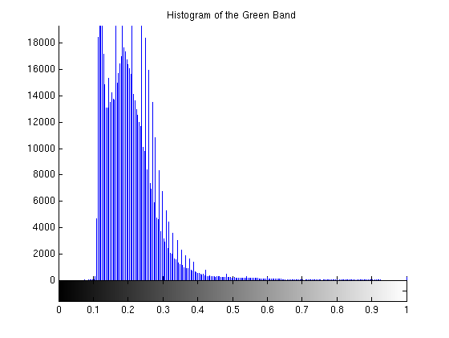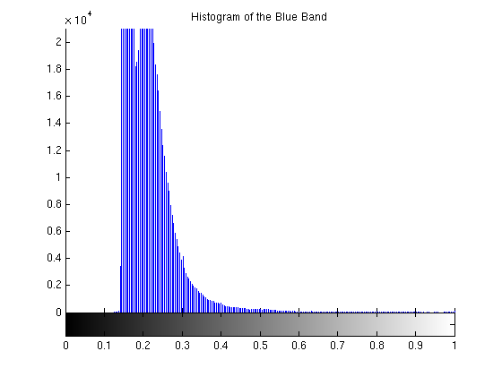
Adjust the overall color curves. Choose .07 to .45 as the region of the histogram to stretch between 0 and 1. This range covers the peaks of the RGB histograms and brightens the overall image nicely without distorting the RGB colors too much.
piecewise_stretch_brighten = imadjust(piecewise_stretched, [.07, .45], [0. 1.],[]);
Display the piecewise-linear stretched and brightened image.
figure mapshow(piecewise_stretch_brighten,R); xlabel('Easting (meters)'); ylabel('Northing (meters)'); title({'Truecolor Composite ', ... 'Piecewise-linear Stretched and Brightened'});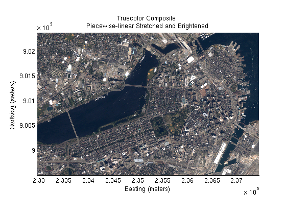
Rather than adjusting the red, green, blue histograms, the piecewise-linear stretched image is transformed to L*a*b* space. Using adaptive histogram equalization, the L* band is enhanced to brighten the overall image which provides more contrast between the colors.
Create the RGB to L*a*b* color transform.
cform2lab = makecform('srgb2lab');
Apply the color transform to the balanced image.
LAB = applycform(piecewise_stretched, cform2lab);
Display the L* band.
figure
mapshow(LAB(:,:,1),R);
title('L*a*b* Color Space -- L* Band');
axis off
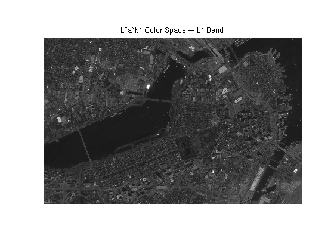Enhance the L* band using adaptive histogram equalization.
LAB(:,:,1) = adapthisteq(LAB(:,:,1));
figure
mapshow(LAB(:,:,1),R);
title('L*a*b* Color Space -- L* Band Brightened');
axis off
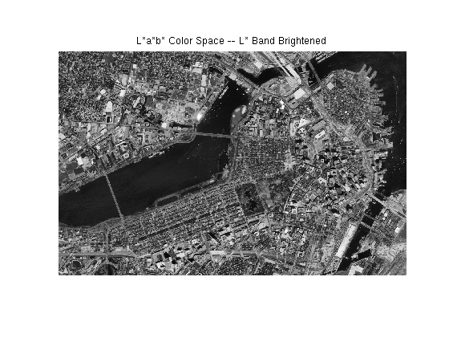Transform the enhanced L*a*b* color space to RGB.
cform2srgb = makecform('lab2srgb');
piecewise_stretch_lab_brighten = applycform(LAB, cform2srgb);
Display the enhanced image.
figure mapshow(piecewise_stretch_lab_brighten,R); xlabel('Easting (meters)'); ylabel('Northing (meters)'); title({'Truecolor Composite ', ... 'Piecewise-linear Stretched and L*a*b* Brightened'});
Assign selected zoom limits.
xLim = [234580, 236560]; yLim = [900130, 901800];
Display the original truecolor image.
figure mapshow(truecolor,R); set(gca, 'XLim',xLim); set(gca, 'YLim',yLim); xlabel('Easting (meters)'); ylabel('Northing (meters)'); title({'Zoomed Truecolor Composite ', 'Original'});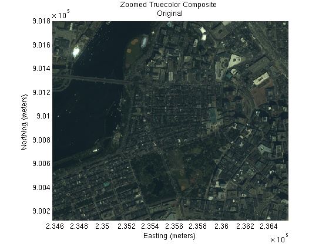
Display the truecolor band stretched image.
figure mapshow(band_stretched,R); set(gca, 'XLim',xLim); set(gca, 'YLim',yLim); xlabel('Easting (meters)'); ylabel('Northing (meters)'); title({'Zoomed Truecolor Composite ', ... 'Band Stretched'});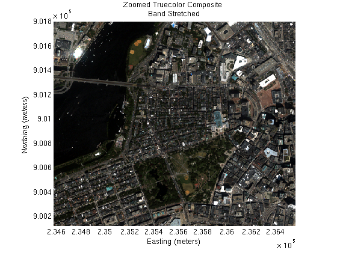
Display the truecolor piecewise-linear stretched and brightened image.
figure mapshow(piecewise_stretch_brighten,R); set(gca, 'XLim',xLim); set(gca, 'YLim',yLim); xlabel('Easting (meters)'); ylabel('Northing (meters)'); title({'Zoomed Truecolor Composite ', ... 'Piecewise-linear Band Stretched'});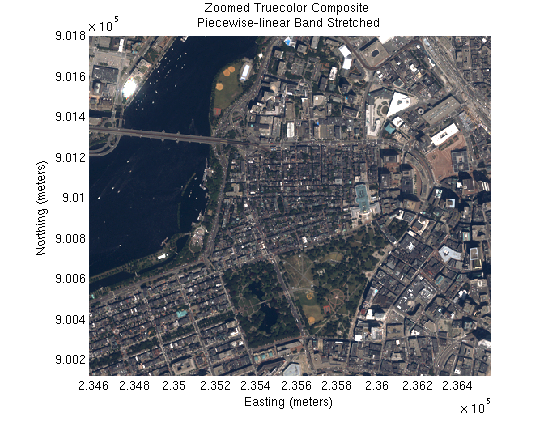
Display the truecolor piecewise-linear stretched and L*a*b* brightened image.
figure mapshow(piecewise_stretch_lab_brighten,R); set(gca, 'XLim',xLim); set(gca, 'YLim',yLim); xlabel('Easting (meters)'); ylabel('Northing (meters)'); title({'Zoomed Truecolor Composite ', ... 'Piecewise-linear Stretched and L*a*b* Brightened'});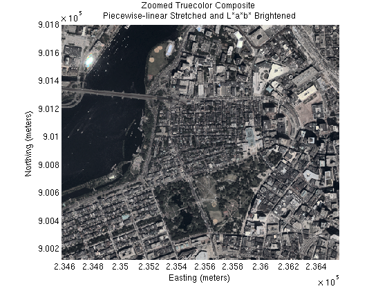
Compare the enhancements by viewing a montage of image sub-areas corresponding to the zoomed map.
Compute row and column subscript limits by converting the upper left and lower right image corners from map coordinates.
[rowLim, colLim] = map2pix(R, xLim, fliplr(yLim));
Convert the row and column limits to round numbers.
rowLim = round(rowLim); colLim = round(colLim);
Compute row and column subscript arrays for the sub-area.
rows = [rowLim(1):rowLim(2)]; cols = [colLim(1):colLim(2)];
Assign nrows and ncols. nrows and ncols are the number of rows and columns of each individual montage element.
nrows = numel(rows); ncols = numel(cols);
Initialize an uint8 array to hold all four images.
montage(2*nrows, 2*ncols,3) = uint8(0);
Place the images in the montage image.
montage(1:nrows, 1:ncols,:) = truecolor(rows, cols,:); montage(1:nrows, ncols+1:end, :) = band_stretched(rows, cols,:); montage(nrows+1:end, 1:ncols, :) = piecewise_stretch_brighten(rows, cols,:); montage(nrows+1:end, ncols+1:end, :) = piecewise_stretch_lab_brighten(rows, cols,:);
Save the border preference and set it to tight.
borderPref = iptgetpref('ImshowBorder'); iptsetpref('ImshowBorder', 'tight');
Display and label the images.
figure imshow(montage); text(25,25,'Original','color','cyan'); text(ncols+25,25,'Band Stretched','color','cyan'); text(25,nrows+25,'Piecewise-linear Band Stretched','color','cyan'); text(ncols+25,nrows+25,'Piecewise-linear Stretched and L*a*b* Brightened','Color','cyan');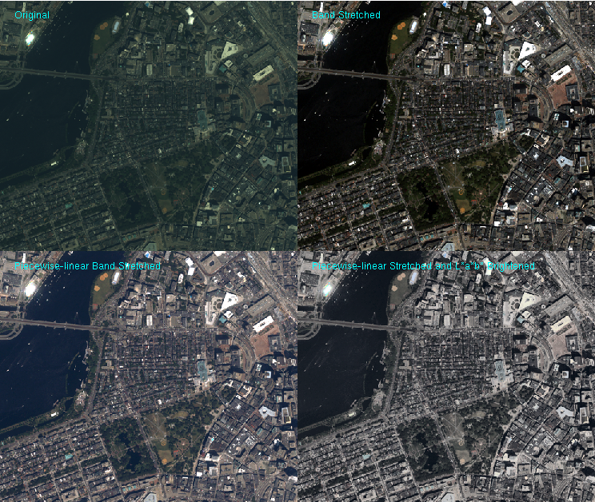
Reset the border preference.
iptsetpref('ImshowBorder', borderPref);
The GeoTIFF files boston_red.tif, boston_green.tif, and boston_blue.tif are courtesy of Space Imaging LLC and include material copyrighted by Space Imaging LLC, all rights reserved. For more information, please call 1.800.232.9037 or +1.301.552.0537 or visit http://www.spaceimaging.com